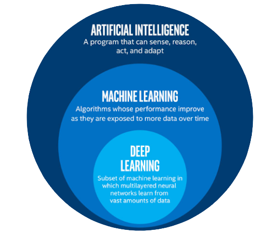

Deep learning algorithms have been a constantly changing field over the past couple of decades and do not appear to be slowing down in terms of innovation. New algorithms being discovered, however, is very unlikely. The majority of the innovation done is through the improvement and application of pre-existing algorithms. Currently, there are four machine learning algorithms: supervised, semi-supervised, unsupervised, and reinforcement. These are used to create deep learning systems and the application of each of these is constantly being revised and improved upon. One such example of this is Deep learning algorithms being used in medicine. Deep learning will most likely be used to create systems that can personalize diagnosis and treatments from patient to patient. Computers are already capable of storing enormous amounts of information for both patients and diseases. Deep learning algorithms can be paired with this data to determine what treatments would work best for each patient. Recently, algorithms were even capable of determining if someone had skin cancer by scanning photos of the moles and skin lesions. As time progresses these deep learning algorithms will become far better than humans at diagnosing diseases. Current deep-learning algorithms are capable of successfully diagnosing 75% of tuberculosis cases, whereas human doctors have a 62% success rate. This success rate for machines has been constantly rising for several years, so one can assume that the deep learning algorithm will improve with time. The ideas for the application of deep learning algorithms have also been constantly rising over time. As scientists ask more questions, deep learning algorithms will be configured to find answers in new and interesting ways. Whether that be diagnosing patients with higher accuracy, creating an unbeatable chess bot, or even a chatbot, deep learning algorithms are only limited by human ingenuity.
